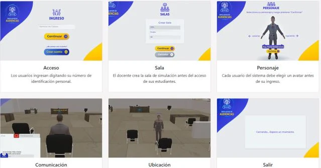
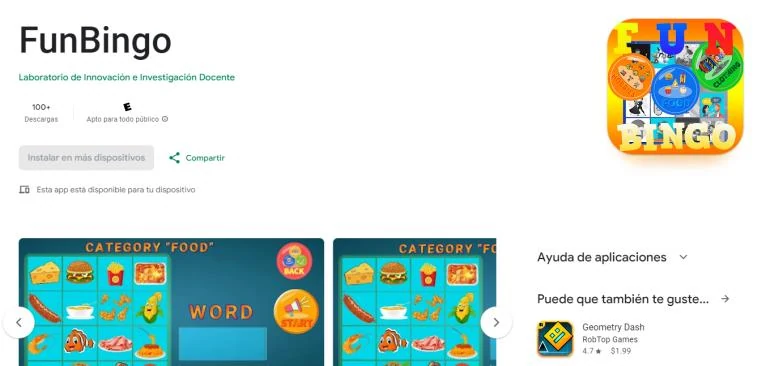
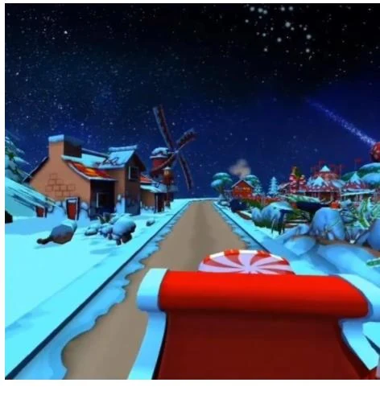
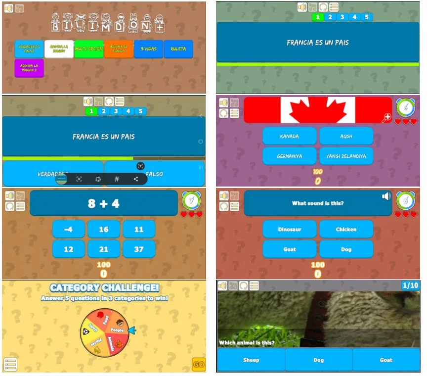
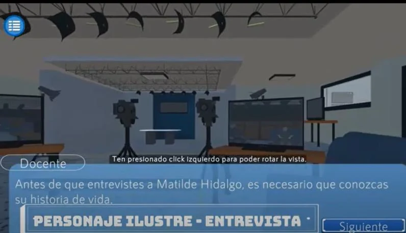
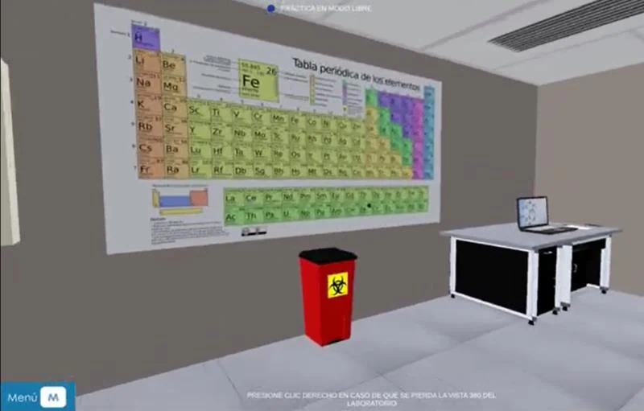
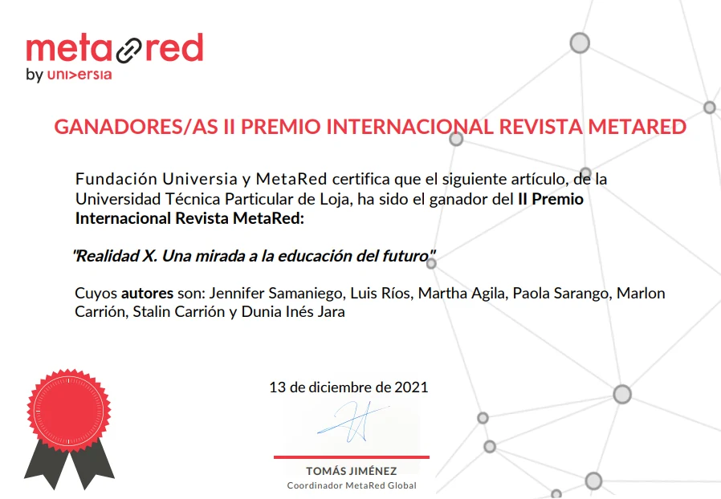

01
Simulation & training
I turn processes, practical exercises and content into interactive environments where users can learn by doing.
Need→Interaction→Simulación
Unity · XR · Simulation · Spain
I build solutions with Unity and C#: multiplayer simulators, virtual reality for Meta Quest and educational games. My work has also evolved into technical leadership, architecture and code review.

*The student figure describes academic reach, not simultaneous users.
Problems I solve
My profile combines real-time development, XR and the ability to turn educational or business needs into usable interactive experiences.
I turn processes, practical exercises and content into interactive environments where users can learn by doing.
I design and program immersive interactions for Meta Quest, integrating 3D content, logic, UI and performance.
I work with synchronization, user enrollment, data and services for connected experiences built with Unity.
I make technical decisions, review code and pull requests, mentor developers and help projects reach an integrable and maintainable release.
Selected case studies
Each project shows the need, the solution, my specific contribution, and the outcome or reach I can substantiate.
ACADEMIC SIMULATION
An application for academic practice in a shared virtual environment.
Provide a digital space where students from different degree programs could carry out practical exercises in a multiplayer scenario.
Windows application built with Unity/C#, using Photon, Firebase and PostgreSQL for the connected experience and data management.
Lead developer. I implemented data integration, user enrollment and technical support, and contributed to technical decisions.
~5,000 students per academic term according to the updated CV. This figure does not represent simultaneous concurrency.
Add 1–3 original simulator screenshots here to replace this conceptual visual.
EDUCATIONAL VR · META QUEST
From theoretical content to an experience users can manipulate, observe and explore in virtual reality.
Translate physics and mathematics concepts into an immersive educational experience.
Simulators built from scratch for Meta Quest with Unity, Meta XR SDK and Firebase support.
Programming, architecture, interaction, product design and commercialization/business-model decisions. Built in collaboration with a subject-matter expert.
End-to-end development from scratch of the XR solution and interactive experience.
SOCIAL PROJECT · META QUEST 2
Non-profit VR experience designed for children undergoing chemotherapy treatment.
Create an immersive experience with a social purpose that runs on Meta Quest 2.
Experience built in Unity with integrated 3D models, video and animation.
Full programming and content integration using Unity, C#, Meta XR SDK, Blender, ProBuilder and XR Simulator.
Complete VR experience developed and integrated. No medical or clinical outcomes are claimed.

EDUCATIONAL GAME · ANDROID
Problem Make learning English more playful.
Solution Bingo using sound, text and images, plus medals, a podium and player profile.
My contribution Design and programming in Unity/C#.
Outcome Selected in 2021 for implementation in UTPL's English degree program.

VR · ENTERTAINMENT
Problem Create an immersive Christmas-themed experience.
Solution Interactive VR simulator developed as part of project-based collaboration with Solnus.
My contribution Design and programming; led the simulator's creation according to the historical CV.
Outcome Interactive project delivered in a Unity/VR consulting context.

DESIGN + PROGRAMMING
Interactive trivia game for mobile devices and touchscreens.

PROGRAMMING ADVISORY
Contributed as a technical/programming advisor, without claiming full development ownership.

PROGRAMMING ADVISORY
Programming support and advisory work on an educational simulator.
Career
My progression at UTPL shows how I moved from research and prototyping to lead development, architecture decisions and coordination.
Led innovation projects; coordinated teams of 1 to 8 people; technical consulting, architecture, code review, pull requests and GitHub/GitLab workflows.
Lead developer at the lab. Built prototypes, simulators and immersive experiences with Unity/C#; contributed to technical decisions and trained students.
Taught fundamentals of game development with Unity while mentoring student projects.
Research, proofs of concept and feasibility assessment of technologies for higher education.
Unity, VR, video games, interactive experiences, immersive training, trivia games and virtual tours.
Education & evidence
Computer Systems and Computing Engineer. I am currently pursuing the University Master's Degree in Video Game Design and Programming at UOC.
RECOGNITION

Member of the institutional project team recognized with the II International MetaRed Magazine Award. The updated CV also records an individual UTPL recognition for my contribution to the project.
Contact
Open to opportunities in Unity, XR, simulation, Real-Time 3D and technical leadership.
{kind=link}
{kind=link}
{kind=link}
{kind=link}
{kind=link}
{kind=link}